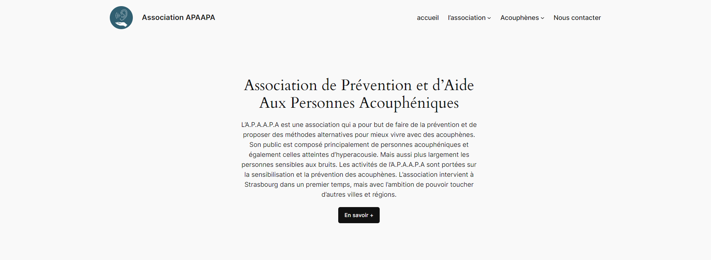

Cration d'une page web pour un restaurant
Le but ici était de créer une page harmonieuse où les clients pouvaient reserver un table en choisisant le nombre de personnes ainsi que l'heure et la date.

Cration d'une page web en Java SCript
Pour rendre une page web un peu plus dynamique, j'ai utilisé du js pour faire apparaître un popup et également pour supprimer la barre de navigation lors du scroll.
Création d'une site internet
Ici j'ai fait un site internet pour mettre avant pour l'Association de Prévention de Acouphènes et d'Aide au personnes Acouphéniques. Le but était de pouvoir avoir un bref visuel de ce que nous proposons et de qui nous sommes.
